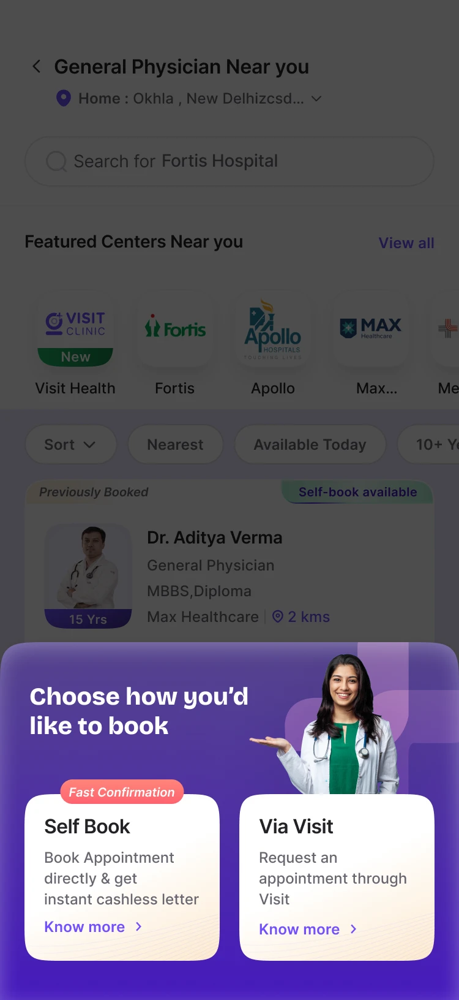
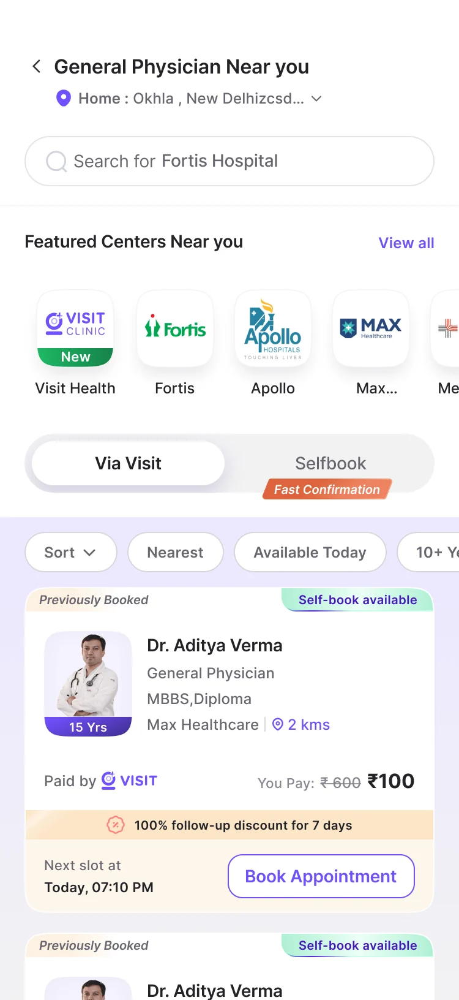
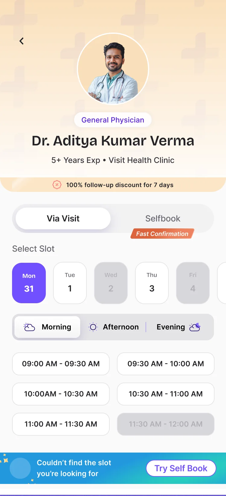
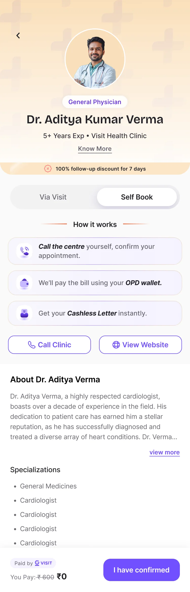
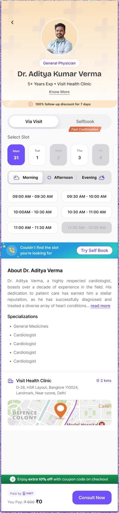
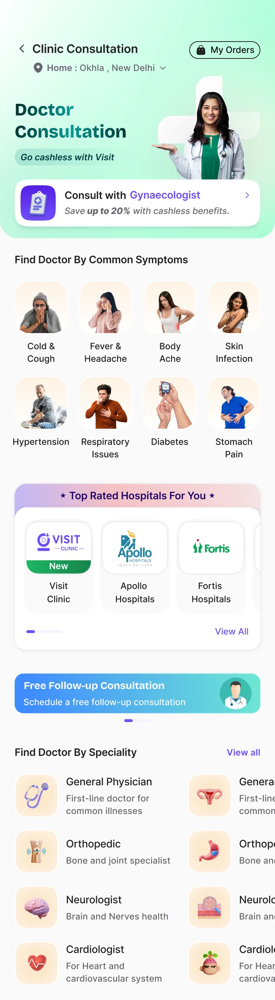
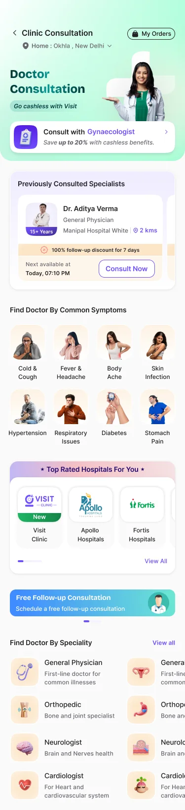
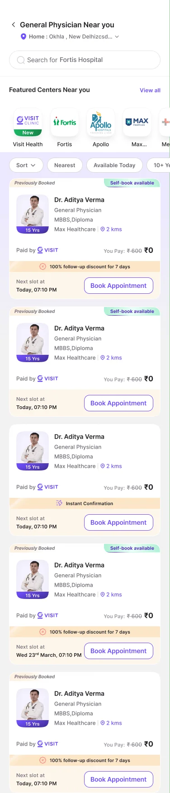

The banners split the doctor network in two
A fork before any doctor, a Self-Book list that looked tiny, and no way to switch.
Offline doctor consultations
Booking a doctor visit shouldn't start with picking a booking method. This is how I redesigned the way employees find, book and rebook in-person consultations.
The company benefit covers it. Open the app.
Before seeing a single doctor, you have to pick how to book.
You pick a booking mode without seeing a single doctor.
Only the Self-Book doctors show up. It looks like that's all there are.
You leave with a bad impression of the app, and without booking.
This is how it should feel, every single time.
That fork in panel 2 is where people were getting lost, and panel 5 is what it cost us. So I redesigned the flow around it, end to end.
The card flips. Go on, tap it.
Chapter 1 · The fork
The app had two ways to book: Via Visit, where our team confirms your slot in 4 to 6 hours, and Self-Book, where you call the clinic and get a cashless letter within minutes. Each made sense. The home screen just made you pick one first.
The network, as one list. Each dot is about 1% of our doctors.
The home screen asks first: Via Visit or Self-Book? Only about a fifth of doctors take Self-Book.
Tap Self-Book and you see about 20% of the network. It looks like that's every doctor we have.
No way to switch to the other list. If your doctor isn't here, the booking ends.
People who picked Self-Book saw a short list, assumed that was everyone, and left, even when the doctor they wanted was in the network.
And it wasn't just a supply problem. Even when the same doctor offered both, people still picked Via Visit. Adding more Self-Book doctors wouldn't fix this. The order of the flow had to change.
Chapter 2 · Listening
Several companies whose employees use the app gave us the same feedback. Then I walked the old flow screen by screen and wrote down everything that got in the way.
Client feedbackThe consultation home is just two banners, and nothing else.
Note · HomeNo primary CTA that leads to booking a consultation. Can't understand where to tap on this screen.
Note · SpecialistsLong list of specialists. Too many choices, and a long scroll on the screen.
Note · BookingI can't understand the difference between clinic and Self-Book.
Note · FlowNo flexibility to change slots, doctor or patient. Every fix adds one more tap.
Note · Returning usersA returning user has to search for their doctor again, every time.
To users, it looked like two separate apps joined together.
Chapter 3 · The whiteboard
I put everything that was broken on one board, then grouped it until three problems were left.
A fork before any doctor, a Self-Book list that looked tiny, and no way to switch.
No symptoms, no doctors, no primary CTA. Just two banners and a long specialist list.
Returning users searched again, and follow-ups meant a brand new booking.
My primary goal
Help people find the right doctor first, and book them the way that works, without a dead end.
Chapter 4 · The people
Booking looked the same for everyone, but people wanted different things. I mapped four user types by policy and by whether they'd booked before.
Chapter 5 · From stories to features
I wrote user stories for those four people, grouped them into five How Might We questions, and card-sorted every feature idea under the question it answered.
How might we make doctor consultations easy to find, so users understand how to book, save money and go cashless without confusion?
Fixes problem 02How might we keep Via Visit as the default while offering Self-Book as a fallback, so users can still book when their slot isn't available?
Fixes problem 01How might we make rebooking and follow-ups easy for returning users, so they can continue their care without starting over?
Fixes problem 03How might we let users start from an illness or symptom, so they can find the right doctor without knowing specialities?
Fixes problem 02How might we surface the most relevant doctors for a user's concern and history, so they choose with confidence, faster?
Fixes problem 02And every question had a business reason
Chapter 6 · Looking around
Before drawing anything, I went through how other health apps let you find and book a doctor.
Instant connect with a doctor helps people decide fast, without overthinking.
A single CTA on the screen to book a consultation. Nothing competing with it.
Doctors come first, and each doctor gets one screen, not a profile and a separate slot page.
I walked its doctor search on iOS step by step. You find the doctor before anything else.
The first decision a user makes is always which doctor. The booking mode should come after that, on the doctor's own page, not on the home screen.
The key decisions
Everything above pointed the same way: let people find their doctor first. Here are the six decisions that came out of it, each with what it was like before, what I decided, and what changed.
Decision 01
Our doctor network looked about 80% smaller than it was, to anyone who tapped Self-Book.
Home showed two banners, one per booking mode. Picking Self-Book opened a list with about 20% of our doctors, and there was no way across to the rest. People saw a short list, assumed that was everyone, and left. Even when the same doctor offered both modes, they still chose Via Visit, so adding Self-Book doctors alone would not fix it.
Merge both lists into one, and make the booking mode a detail of the doctor instead of a fork on home. "Self-book available", "Instant Confirmation" and "Previously Booked" became tags on the card, and filters (Nearest, Available Today, experience) let people narrow the list themselves. Practo, PharmEasy, Apollo and Zocdoc all start from the doctor; we should too.
Everyone sees the whole network first. The short Self-Book list no longer exists as its own screen, so nobody lands on it and leaves.
ResultLive on the app. We're watching how many people drop off before booking now that the full list comes first.
Decision 02
It took three tries to find the right home for one small choice.
The booking mode was decided on home, long before choosing a doctor. Then the profile and the slots sat on two separate screens: two taps and two loads just to see availability.
Ask for the booking mode only after the doctor is chosen. Finding the right place for that choice took two tries, a bottom sheet and then tabs on the doctor list, before the final version: Via Visit and Selfbook as tabs on the doctor's own page, with profile and slots on one screen. Every version is below.
People choose their doctor first, then switch between the two modes freely without losing the doctor. Two taps and two loads became one.
Two banners on home. You pick a mode before you see a doctor.

Pick a doctor, then a sheet asks you to "Choose how you'd like to book": Self Book or Via Visit. An extra tap, no clear reason to pick one over the other, and no way back to Self-Book if you chose Via Visit and didn't get your slot.

This screen's job is discovering a doctor, whatever the mode. Nothing said how the two modes differ, and even users who picked Self-Book weren't told why they'd want it.


Pick your doctor first, then switch freely between the two modes. If your slot isn't free, a clear prompt suggests Self-Book, and the Self-Book tab explains what to do right where you'd pick a slot.
ResultLive on the app. People pick their doctor first and switch between the two modes without losing them. Profile and slots sit on one screen, so two taps and two loads became one.
Decision 03
Self-Book was cheaper for us to run. I still didn't make it the main path.
If your preferred Via Visit slot was taken, the booking simply ended. There was no easy way to Self-Book the same doctor, even though Self-Book gives a cashless letter in minutes.
Keep Via Visit as the default, because people trust it and it needs no phone call. Show Self-Book only at the moments a booking would otherwise fail: "Couldn't find the slot you're looking for · Try Self Book" under the slots, and "Book directly with doctor for instant cashless letter · Try Self Book" at checkout. The Self Book tab then explains itself in three steps.
A full slot now leads to a second way to book, with the same doctor, instead of a dead end.
Try it

Tap the greyed-out slot.
ResultLive on the app. We're watching how many Self-Book bookings come from people whose Via Visit slot was taken.
Decision 04
Home asked how you wanted to book before it asked what was wrong.
Two banners competed for attention, one per booking mode, with no clear place to tap. There was no way to start from a symptom, a hospital or a doctor, and a patient filter asked "who is this for?" before anything else.
Rebuild home around finding a doctor. 8 common symptoms, from cold and cough to stomach pain, for people who don't know the specialist. Top-rated hospitals with real logos, which also build trust. Specialities explained in one line, like "Orthopedic, bone and joint specialist". One cashless banner, so the benefit is clear upfront. The patient filter went, and appointments moved to My Orders.
Home does one job: get you to the right doctor, whether you start from a symptom, a hospital or a speciality. The booking mode no longer comes up here at all.

Scroll inside the phone to see the whole screen.
ResultLive on the app. We're watching drop-off before booking, now that people start from what's wrong instead of how to book.
Decision 05
People who had already found a doctor they trusted had to find them all over again.
There was no way to book a doctor you'd seen before. Returning users started from scratch: pick a mode, search, scroll, and hope to spot the same name.
Put the doctors people have consulted right on home, with their next slot. Tag them "Previously booked" on the doctor list, so they stand out wherever you start. And show the free follow-up within 7 days on the doctor's page, so coming back feels worth it.
Your doctor is one tap from home. Rebooking takes the same few steps as any booking, without the search.


ResultLive on the app. We're watching repeat consultations: bookings from previous doctors and the free follow-up.
Decision 06
One home was trying to talk to four different people.
Everyone got the same home, whether it was their first booking or their fifth, with a policy or without.
Four versions of one home. Policy holders see their cashless benefit; others see the price, starting at ₹200. Returning users get their doctors on top; first-timers start with symptoms.
Each person sees what matters to them first. Tap any screen to look closer.
ResultLive on the app, in all four versions.
Chapter 7 · Where it stands
Live on the app
Fewer people leaving, now that everyone sees the full doctor list first.
Self-Book completions after a Via Visit slot wasn't available.
Bookings from previous doctors and the free follow-up.
These sit with ops and the process owners.
That's the booking, sorted
Users choose a doctor first. Now the app does too.